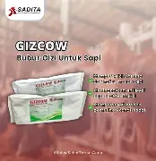
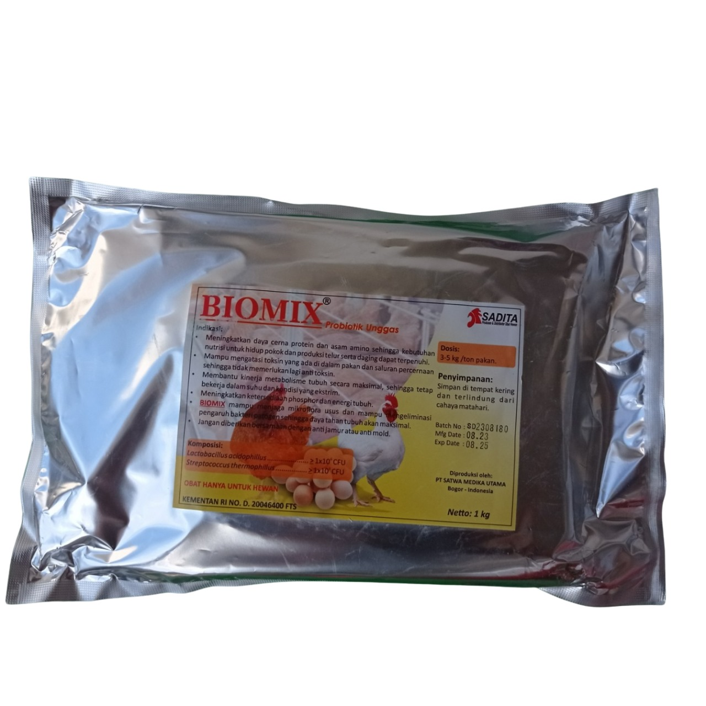

Rangkaian Produk Solusi Ternak
Gunakan sesuai kebutuhan sapi, bisa satu produk atau dikombinasikan untuk hasil maksimal.

/>
Pemulihan
TERLARIS
GIZCOW
Bubur Pemulihan Sapi
Cocok untuk:
- Sapi pasca sakit
- Sapi stres
- Kondisi menurun drastis
Membantu sapi kembali pulih dan siap melanjutkan pertumbuhan.
 />
/>
Nutrisi
REKOMENDASI
TOP MINERAL
Premix Nutrisi Sapi
Cocok untuk:
- Bobot sulit naik
- Kebutuhan mineral tidak seimbang
- Pertumbuhan lambat
Membantu mendukung pertumbuhan dan performa sapi lebih stabil.

/>
Pencernaan
BIOMIX
Probiotik Sapi
Cocok untuk:
- Nafsu makan turun
- Pencernaan kurang optimal
- Kotoran tidak normal
Membantu penyerapan nutrisi pakan secara lebih maksimal.